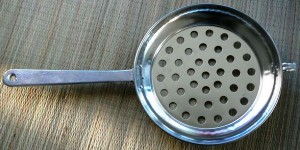
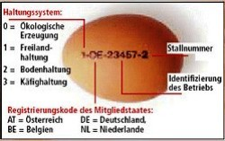

Rohscheiben sind eine Delikatesse
aus Uromas Zeiten - man kennt sie dick oder dünn. Während die
einen Rohscheiben weiterhin aus dem Sparherd (Bild links)
mögen, andere kennen sie nur noch
dünn aus der Plastiktüte und bezeichnen sie Chips, als hätten
sie die Amerikaner erfunden. Stadtmenschen kaufen sie über Maß
gesalzen, gepfeffert oder mit Paprika scharf gemacht und/oder mit weiteren
Zusatzstoffen angereichert als Appetit- und Durstanreger für weitere
Dickmacher.
Einen ungarischen Namen haben die Rohscheiben bis heute
nicht, das deutsche Wort wurde früher aus diversen
donauschwäbischen Mundarten ins Ungarische übernommen und meistens als "Rohschejbni"
ausgesprochen.
Dicke Rohscheiben
bezeichnet man in Deutschland als Bratkartoffel. Sie sind
eine
ideale Beilage zu diversen Braten, wie z.B. Wiener
Schnitzel oder Geflügel aus dem Backofen, wie Entenbraten oder
Weihnachtsgans.
Beim Kauf von Chips in der Plastiktüte sollte
man bedenken, was man überhaupt kauft. In einer Tüte gibt es
Chips von einer einzigen Kartoffelknolle so zubereitet, dass
man danach Hunger und Durst bekommt. Rohscheiben kann zu Hause
jedermann auch ohne Kochkenntnisse in max. 15 Minuten
zubereiten und was man dann hat, das schmeckt nach gesunden,
sättigenden Kartoffeln. Für den Preis einer Tüte Chips bekommt
man bis zu zwei Kilo, etwa die zwanzigfache Menge einer Tüte
Durst- und Hungermacher.
Wir zeigen das folgende Video als
erschreckendes Beispiel dafür, wie man es nicht machen sollte
und geben unter dem Video Tipps, damit Ihre Rohscheiben
perfekt gelingen:
Früher backte bzw. röstete man die Kartoffelscheiben ohne Fett im Ofen des
Sparherds oder im Steinofen. Ein jeder schmierte eine kleine, individuelle Menge
Fett - Butter, Schweine- oder Gänseschmalz - und streute Salz nach eigenem Gutdünken darauf.
Wennschon eingefettet oder geölt gebacken, die fertigen Chips
sollten auf einem Papiertuch
trocknen und je nach Bedarf mit Gewürzsalz und/oder einer
Salz-Paprikamischung bestreut werden. Was man in Deutschland als
"Hähnchengewürz" verkauft, das ist eine Mischung aus Salz und
Paprikapulver - genau ideal für die Rohscheiben.
Pizza und Bratkartoffeln, so auch Rohscheiben benötigen große
Hitze beim Backen bzw. Braten, Pizza um die 350°C, aber auch
die Brat- oder Röstkartoffeln erfordern ähnlich große Hitze. Das können moderne Elektroöfen
nicht, weil sie aus Sicherheitsgründen nur bis zu 250°C warm werden.
Es gibt auch Pizzaöfen zu kaufen und man könnte sie in die
normale Haushaltsherde einbauen, aber die Fabriken spekulieren
lieber mit unverschämt überteurten Preisen. Bratkartoffeln
macht man aus diesem Grund bekanntlich in einer heißen Pfanne.
Teflonpfannen sind wegen ihrer Hitzeunverträglichkeit kritisch,
eher als ungeeignet (auch aus gesundheitsschädigendem Grund)
zu betrachten, umso besser sind die neuzeitlichen, keramisch
beschichteten Bratpfannen, die bis zu 400°C "Hitze"
vertragen sollen. Wichtig: Uromas
Sparherd schaffte die benötigte Hitze sowohl im Backofen, als
auch oben auf der Gußeisenplatte, als man die Röst- und
Bratkartoffeln erfand.
Wichtig, wenn man die
Kartoffeln in Fett röstet: Kaltgepresste Speiseöle vertragen
wenig Hitze, ähnlich wie Schmalz. Raffinierte Raps- und
Sonnenblumenöle vertragen die größte Hitze, zudem ist Rapsöl
cholesterinfrei und billig und das muss schon ein Dorn im Auge
der Agrarindustrie sein, wenn man stattdessen Palmfett und
Butterschmalz für die europäische Küche erfindet, dabei
vertragen diese weniger Hitze, als es die Werbung verspricht.
Butterschmalz mag bei Schnitzel besser schmecken, Butter
in Speiseöl noch besser und ist preisgünstiger, man muss nur auf
die Idee kommen, der Werbung weniger Aufmerksamkeit zu
schenken. Übrigens: Butter verträgt genauso wenig Hitze, wie Olivenöl. Wir empfehlen
daher das Rapsöl, das geschmacksneutral jedes Gericht beim
Eigengeschmack belässt. Etwas Butter oder Kräuterbutter kann
man auch nach dem Braten zugeben, wenn das einem feiner
schmeckt.
Für gute
Rohscheiben benötigt man gleiche Sorte Kartoffeln. Die als
"vorwiegend festkochend" gekennzeichneten Packungen aus dem
Supermarkt enthalten Lagerreste aus unterschiedlichen
Kartoffelsorten, die der Handel loswerden will, ohne den
kleinen Finger für weitere Verbraucherinformation zu rühren, wofür der
Packungsinhalt überhaupt geeignet ist. "Vorwiegend" bedeutet
für KöchInnen: nur teilweise geeignet - Finger weg davon!
Die
Kartoffeln für Rohscheiben sollte man unbedingt gleichmäßig
schneiden. Bei der geringen Dicke der einzelnen Scheiben sind
geringe Abweichungen mit dem Messer nicht zu vermeiden und diese
vermeidlich geringen Abweichungen sind nicht unerheblich für
den gleichmäßigen Braterfolg. Für Rohscheiben eignen sich
Gurkenhobel hervorragend. Auch für dicke
Rohscheiben bzw. Bratkartoffeln gibt es Gemüsehobel im Handel.
Zu Uromas Zeiten sparte man noch mit allem, was man zur
Verfügung hatte. Es galt auch in den herrschaftlichen Küchen:
eine gute Köchin muss sparen können! Die Kartoffelscheiben
backte bzw. röstete man damals noch ohne Fett im Ofen oder in
einer handgehämmerten Gußeisenpfanne, die ein Jahrhundert lang
ihre Qualität behielt und darin nichts anbrannte. Erst am
Teller nahm man Schmalz oder Butter dazu, Paprika-,
Pfefferpulver, Essig, Öl und Salz, evtl. auch Knoblauch standen damals
bei den Donauschwaben an jedem Tisch griffbereit.
Wissenswerte Gesundheitstipps:
Acrylamide - Im Öl frittiert,
bilden sich oberhalb von 120°C besonders viele Acrylamide
in allen kohlenhydratreichen Lebensmitteln, wenn in diesen
Lebensmittel der Wassergehalt gering ist, so wie die
Kartoffeln nun mal beschaffen sind. Acrylamide in
Rohscheiben sind daher nicht zu vermeiden. Das wußten unsere
Uromas nicht, sonst hätten wir heute eine Lösung dagegen,
weil heutzutage nicht mehr nachgedacht, vielmehr nur noch
abgekupfert wird aus fremden Rezeptheften. Wer auf
Rohscheiben nicht verzichten will, setzt sich in jedem
Fall einer erhöhten Krebsrisiko aus. Dagegen hilft daheim
nur eine möglichst kurze Hitzezeit bei Niedrigtemperatur. Damit in den
Chipsfabriken wenig Acrylamide gebildet werden, die von
der Lobby erkorene und vom Gesetzgeber gesegnete bzw.
zugelassene Acrylamid-Grenzwerte eingehalten werden
können, verwendet man dort eine Backmethode bei niedrigen
Temperaturen nahe 120°C. Da fehlt aber der typische
Kartoffelgeschmack von Rohscheiben, der erst bei großer Hitze
entsteht. Unmengen von Salz, Geschmackverstärkern und
weiteren, auch nicht angabepflichtigen Zusatzstoffen in
den Chipsbeuteln sorgen dafür, dass die Fabrikchips
trotzdem "schmecken" und man nach jeder Scheibe noch mehr
Hunger und Durst bekommt. Da bleibt "nur" der
Kartoffelgeschmack auf der Strecke.
Transfettsäuren - sind
gesundheitsschädlich, indem diese unsere Blutwerte -
Blutdruck und Cholesterin - ungünstig verändern.
Transfettsäuren entstehen, wenn man industriell gehärtete
Fette zum Frittieren verwendet. Das Thema
"Transfettsäuren" ist hierzulande noch ein Streitthema.
Während in Deutschland die um ihre eigene Gesundheit
besorgten Bürger in den gekauften Medien als "Gesundheitsgurus"
abgestempelt und von der
parlamentarischen Lobby zur Lächerlichkeit verdammt
werden, ist die FDA (Gesundheitsbehörde des
Bundes) in den USA bereits soweit, dass sie nach
dem Verbot in mehreren Bundesstaaten nunmehr ein Verbot
künstlich gehärteter Fette im
gesamten Land beabsichtigt.
Backkartoffeln /
Sültőben sült krumpli
Das Wort "Backen" fehlt in der
ungarischen Sprache, so
umschreiben die Ungarn mit bis zu halben Sätzen, wo das Backprodukt "gebraten"
wird. So z.B. werden die Grillkartoffeln "auf dem Rost über
dem Grill gebratene Kartoffeln" genannt. Bezeichnungen für
die Backkartoffeln sind: im Backofen (sütőben sült), im
Steinofen (kemencében sült), im Herd (kályhában sült) oder
in der Asche (hamuban sült) gebratene Kartoffeln. In
früheren Zeiten, als man die Temperatur noch nicht genau
regeln konnte, benötigte man viel Aufmerksamkeit, damit die
Backkartoffeln mundgerecht schmeckten. In der modernen Küche
bestimmen Kartoffelgröße und der Ofentyp die Backzeit. So
benötigt man ca. 90 Minuten Backzeit bei 200°C Wärme für
größere Kartoffeln.
Beliebt sind die Backkartoffeln weltweit. Früher aß man sie
mit Schmalz oder Butter beschmiert und für den Genuß saß die
Familie zwangsweise um die Backstelle herum zusammen. Mit der
Zeit gibt es immer mehr neue Rezepte und die Phantasie in der
Küche kennt keine Grenzen, wie das folgende Video zeigt.
Stadtmenschen, vor allem die vom Smartphone täglich 24
Stunden lang faszinierten Genres können die Zeit und Geduld
für das Gelingen in der eigenen Küche nicht mehr aufbringen.
Wir haben das folgende Video ausgesucht, weil es beschreibt,
wie die Backkartoffeln noch schneller, in wenigen Minuten in
der Mikrowelle zubereitet werden können. Das stimmt,
allerdings schafft das nur ein Koch, der tagtäglich unzählige
Male im gleichen MW-Herd gleich große Kartoffeln backt.
Aus eigener Erfahrung möchten wir zum folgenden Video
hinzufügen, dass das Backen von Kartoffeln allein im Mikrowellenherd
sehr viel Übung benötigt. Den Vertretern von Mikrowellenherden
in den Warenhäusern gelingt es immer, weil sie die gleiche
Prozedur täglich vielfach vorführen und das landesweit
vielerorts monatelang. Je seltener man Kartoffeln backt, umso
seltener wird es gelingen, nach längerer Pause benötigt man
einige Versuche, bis die Kartoffeln tatsächlich mundgerecht
gebacken werden, aber schmecken tun sie allein aus der
Mikrowelle niemals so gut, wie aus dem Steinofen, Backofen
oder in der Natur aus der Asche. So werden die Backkartoffeln
in Restaurants - wie auch im Video von einem Koch - in der Mikrowelle nur vorgegart und
dann am Grill oder im Ofen fertig gebacken.
Petersilienkartoffel /
Petrezselymes krumpli
Petersilienkartoffeln gehören schon lange auf den Tisch zu
den feinsten Gerichten als Beilage. Bei Braten, wie z.B. dem
Wiener oder Pariser Schnitzel sind sie unerläßlich.
Warum auch immer, die ungarischen Bauer wollten lange mit
den Kartoffeln nichts zu tun haben. Somit ist Ungarn ein von
den letzten Ländern in Europa, wo Kartoffeln erst in den
1780er Jahren angebaut wurden
- auf Befehl des ungekrönten Königs der Ungarn, Joseph, dem
Sohn von Maria Theresia. Er war seiner
Zeit weit voraus ein moderner König, führte viele
vernünftige, vor allem wirtschaftliche Reformen durch und
sah in den Kartoffeln eine große Steuerquelle. Ob er schon
das Wässerchen Vodka aus Kartoffeln kannte, das wissen wir
nicht, abhängig war er aber bekanntlich. Er vermied jeden
Konflikt im eigenen Land, so setzte er seinen
Anbauzwang mithilfe von staatlicher Unterstützung durch.
Wie Petersilienkartoffeln zubereitet werden, zeigt und
erklärt das folgende Kurzvideo:
Kartoffelpüree kennt jeder weltweit. Viele mögen es lieber,
wenn die Kartoffeln nicht ganz zerdrückt werden, dann schmeckt
es eher nach Kartoffeln und schon deswegen kommen die Gäste
nicht auf die Idee, man hätte das Püree aus Fertigpulver
gemacht.
Links: Gänsekeule mit Rotkohl bzw.
Blaukraut und Kartoffelpüree, das am Martinstag (11.11.) auch
in Ungarn gerne verzehrt wird in Gedanken an den Heiligen
Martin aus der römischen Provinz Pannonia - heute Westungarn.
Zupfnudeln /
Csipetke
Der Teig für Csipetke bzw.
Zupfnudel wird ohne Wasser, ausschließlich aus Ei und Mehl
geknetet und mit Salz abgeschmeckt. Beispiel für
Zutaten: 1 kg Mehl, 8 Eier, 8 Prise Salz.
Bei Allergie kann das Ei mit Wasser ersetzt werden, dann
aber bitte Hartweizenmehl, möglichst auch Hartweizengrieß
verwenden. Das Ergebnis im Teller schmeckt ähnlich
bis gleich.
Die Salzmenge im Teig ist
Geschmacks- bzw. Gewöhnungssache. Soll der Mann nachher viel
trinken, dann viel Salz zugeben, soll er gesund bleiben, spart
man mit dem Salz, so viel, man kann. Die Italiener verwenden
für uns ungewöhnlich wenig Salz und die Mediziner sagen, das sei der
Grund dafür, dass der Infarkt in Italien meistens nur vom Hörensagen
bekannt ist.
Csipetke
wird als Garnierung
zum Gulasch bzw. Pörkölt gereicht und auch
in der Gulaschsuppe mitgekocht. Ihre
Herstellungsmethode ist eine zeitaufwändige, mühselige
Handarbeit, die sie aus der
Mode und irgendwann wahrscheinlich in die Vergessenheit drängen wird.
Ohne Butter ist Csipetke
gesünder, weniger
klebrig und
schmeckt vielleicht besser, als unsere Spätzle.
Csipetke
wird per Hand Stück für Stück aus dem Nudelteig
gezupft und
zwischen den
Spitzen der Daumen und Mittelfinger zu kleinen, ca. 1 cm dicken
Klößchen gerollt und zunächst auf einem
größeren, mit Mehl bestäubten
Brett verteilt. Die Klößchen werden nun
per Hand mehrmals solange im
Mehl gepresst und gerollt, bis sie relativ hart, aber noch geschmeidig
sind und noch nicht auseinander
reißen. Ungeübte Finger ermüden dabei schnell. Wenn
der Teig auseinanderreißt, gibt man ein Ei zur Masse und
soviel Mehl, dass der Teig nicht auseinander reißt.
Die
hart gedrehten Klößchen werden nun
in einem möglichst kühlen, gut gelüfteten
Raum gelagert, nach ca. 12 Stunden ins
kochende Salzwasser geschüttelt.
Wenn die Csipetke aus dem
kochenden Wasser empor quellen und oben schwimmen, werden sie sofort aus dem
Wasser geschöpft
und in einem Sieb gespült (damit von der klebrigen Stärke
befreit) und abgeseiht.
Übrigens: Csipetke bedeutet Gezupftes und ist identisch mit den
schwäbischen Zupfnudeln. Csipetke wird in Ungarn auf dem Lande
und nur noch in wenigen Restaurants angeboten.
Ungarische
Eiergraupen / Tarhonya
DAS TARHONYA - Eiergraupen werden auch in Österreich Tarhonya genannt.
Dabei handelt es sich um eine heute nur noch in den
erbärmlichen Pusztagebieten bevorzugte Beilage.
Eiergraupen stellen ein Armutszeichen dar, das in der
Roten Ära im sozialistischen Ungarn seine Blütezeit fand
und dort immer öfter nur noch aus Nostalgie verzehrt wird.
Während des sozialistischen Elends beschlagnahmten sich
die einen alles erdenkliche aus dem Volkseigentum, lebten
wie Made im Speck und erkoren zur Volksernährung eine
besonders kalorienreiche Variante der Zubereitung von
Eiergraupen. In der Tat kann man heute diese Art der
Zubereitung von Eiergraupen als eine Spezialität aus der
ungarischen Küche mit wachsender Beliebtheit als Beilage
zu bestimmten Gerichten betrachten und daher zegen wir sie hier.
Bild rechts: Rostbraten mit Letscho und Tarhonya
garniert.
Inwiefern Tarhonya
ungarischen Ursprung hat, wie die Ungarn es behaupten und
neulich sogar in Brüsssel zu einem Hungaricum deklarieren
lassen wollten, darüber kann man streiten. Da die
Eiergraupen auf dem gesamten Balkan bekannt sind, kann man
davon ausgehen, dass sie aus der türkischen Küche
übernommen wurde, es kann aber auch sein, dass die Ungarn
womöglich schon seit anderthalb Jahrtausenden damit leben,
seitdem sie sich aus dem Nahen Osten entfernten. Das
ungarische Wort Tarhonya ist Sprachwissenschaftlern
zufolge persischen Ursprungs und so ähnlich wird auch von
den südslawischen Völkern auf dem Balkan als "Tarana"
ausgesprochen. Die Eiergraupen sind aber auch im
Schwabenland bekannt, kommen jedoch nirgendwo so oft
auf den Tisch, wie in Ungarn.
In
Deutschland haben die Eiergraupen einen anderen Ursprung
in den Gerstenkörnern, die aber schon lange, spätestens
seit den vorletzten kriegsbedingten Notzeiten etwas
vornehm klingend Perlgraupen, in Ungarn als Gerstli (aus
Gerste) genannt werden.
DIE HERSTELLUNG
Die industrielle Herstellung
der Eiergraupen ist denkbar einfach, indem dickere
Spaghettinudeln viel kürzer geschnitten werden.
Die traditionelle Herstellung
der Eiergraupen in der eigenen Küche beherrschen heute
nur noch wenige, eher nur noch die ältere Generation
im Lande, weil es eine sehr mühselige Arbeit ist.
Eiergraupenherstellerin war ein Beruf, eine Zunft in
früheren Zeiten. In wenigen Dörfern gibt es auch heute
noch einzelne Frauen aus der ältesten Generation, bei
denen man noch handgefertigte Eiergraupen bestellen
kann. Hierzu muss der Nudelteig (ohne Hefe, wie
Zupfnudel) hart geknetet möglichst lange, am besten
übernacht ruhen und darf dabei keinesfalls austrocknen. Die
harte Teigmasse wird über ein großes Graupensieb (4-5
mm grobmaschig aus dünnem, aber hartem Drahtseil)
gerieben. Wennmöglich beschäftigt man auch noch die
Gäste damit, da sonst die Arbeit langsam vorangeht.
Wer kein Graupensieb hat, kann den Teig über eine
Gemüsereibe raspeln. Die feinen Graupen werden auf
einem Tisch (evtl. bemehlt) zum trocknen ausgebreitet,
damit sie nach dem Kochen noch etwas Biss haben. Im
Gegensatz zu den industriell hergestellten
Eiergraupen, haben die handgemachten Graupen
unterschiedliche Formen und Größen. Sie schmecken
gerade deswegen besser.
Zutaten: 250 g
Eiergraupen, 50-100 g Clausenburger (kolozsvári) oder
fetter, geräucherter Bauchpeck (császárszalonna), 1
Zwiebel, evtl. 2 Knoblauchzehen, 1 TL Edelsüßes
Paprikapulver, 1 TL Schwarzes Pfefferpulver, 1 große Prise
Salz, 1 Batzen Schmalz oder Pflanzenöl, 500 ml
Fleischbrühe.
Zubereitung: Zwiebel und Bauchspeck
würfeln. In einem Topf die Zwiebel im Fett
andünsten. Die Speckwürfel und Eiergraupen unterrühren
und anrösten, bis letztere eine leicht bräunliche
Farbe bekommen. Gewürze untermischen und mit
Fleischbrühe aufgießen. Nun wird der Topfinhalt
entweder... … aufgekocht und halb
bedeckt langsam köchelnd oder … in der
vorgewärmten Backröhre bei 160°C ca. 20 Minuten lang
auf den Inhalt reduziert, bis die Flüssigkeit
verdampft und die Graupen vom Fett herrlich glänzen.
Darauf achten, dass sie gar gekocht werden und
trotzdem bissffest bleiben.
Servieren:
Beilage zu Paprikaschgerichten und Rostbraten oder
Naturschnitzel, die in Ungarn Flekni (aus dem Flecken)
genannt werden.
Knöpfli / Nokedli
Im
deutschsprachigen Raum: Die Wörter Knobben, Knöpfli oder Nockerli
bezeichnen die knöllchenartig geformte Spätzle, Knobben in
Bayern, Knöpfli im Schwabenland, Nockerli und Nockedli in der Schweiz.
In Ungarn: Die Wörter Nokedli, Galuska (Galuschka) und
Haluska (Haluschka) stehen für die gleiche Beilage. Nokedli
ist die übliche Bezeichnung in ganz Ungarn. Galuschka wurde
von den im Nordwesten von Ungarn lebenden Slowaken übernommen
und Haluschka im Nordosten von den östlichen Slowaken und
Ukrainern.
Nokedli hat keine Bedeutung auf Ungarisch, das Wort stammt aus
der Schweiz, wo es wie "Nockedli" oder auch
"Nockerli" geschrieben wird. Nokedli
nennt man im nördlichen Ungarn Galuschka. Dieses slawische
Wort hat seinen Ursprung in den nördlichen Karpaten von Polen
über die Slowakei und Ukraine bis nach Transsylvanien und es
wird dort im Osten meistens wie Haluschka ausgesprochen. Auch
die nach nationaler Identität suchenden Slowaken versuchen ein
eigenes Nationalgericht aus dieser Form der Spätzle zu
erkoren.
Den augenfälligen Unterschied zu Spätzle verursachte lange Zeit der
Sieb, durch den der Teig ins kochende Wasser gelassen wird.
Dieser Sieb hatte in Ungarn in der roten Ära nur eine einzige
Form, mit der nur dicke Knobben, die ungarische Nokedli
machbar sind. Etwa 2-3 Generationen sind damit
aufgewachsen, weil es in den Eisenwarengeschäften
jahrzehntelang nur einen einzigen Spätzlesieb (aus
rostendem Blech) mit runden Löchern aus der heimischer
Produktion gab - Bild rechts.

Hin- und wieder gab es in den Geschäften die beliebtere Form
einer Spätzlereibe, wie am Bild rechts. Was daraus gekocht
wird, ist die beliebte Form der Nokedli in Ungarn - es sind
kleinere Knobben.
Bei diesem einfachen
Küchengerät wird die verkehrte Seite einer Gemüsereibe benutzt
- ideal verwendbar z.B. als Apfel- oder Krautreibe. Der
eingelassene Teig wird direkt in das kochende Wasser
eingelassen, wie im Video über die Zubereitung, ähnlich wie im
Muxels Werbevideo. Halbwegs zwischen Wien und Budapest liegt
die Stadt Györ an der Donau und dort bekommt man diese
Spätzlereibe für umgerechnet 1,15 € entweder direkt
im Laden oder man bestellt diese
im Onlineshop am Anfang eines Ungarnaufenthaltes.
Geliefert wird nach 1-2 Arbeitstagen.
Mit der Spätzlereibe mit den runden Löchern produziert man die von den
Ungarn als Nationalspeise hochgepriesen Nokedli bzw. schwäbischen Knöpfli oder bayerischen Knobben, die in der
Schweiz Nockerli und Nockedli genannt werden - und das klingt nach Nokedli. Die donauschwäbische Herkunft
ihres Nationalgerichtes können die Ungarn gar nicht abstreiten,
denn vor den schwäbischen Siedlern kannte die ungarische Küche
ihre Nokedli nicht und bezeichneten diese nicht mit einem
Schweizer Wort - von wegen ungarisches Nationalgericht!
Wie
auch immer diese Mehlspeise in Ungarn heißt, sie ist absolut
identisch
mit der schwäbischen Spätzle, auch wenn die ungarischen
Touristikprospekte von eigenem
Nationalgericht stolzieren. Butter und Gries (wenn man kein Spätzlemehl zur
Verfügung hat) gehören im deutschsprachigen Raum in den Teig, Gries
wird in Ungarn fast immer ausgespart und Butter durch
Margarine ersetzt.
Unser Favorit ist die Pasta aus der original schwäbischen
Spätzlepresse aus Schweizer Produktion, wie sie bei den
Donauschwaben im südlichen Ungarn bekannt ist. Sie ist eine Art Kartoffelpresse, die durch unterschiedlich große
und unterschiedlich geformte Löcher die für Spätzle gewünschte
Diversität der Pasta ermöglicht. Je nach Gericht können die
hausgemachten Spätzle besser schmecken, ja sogar besser, als die gleich großen ungarischen Nokedli zum
ungarischen Gulasch.
Die einfachste und schnellste Art für Anfänger und geübte Köche, Spätzle/Knobben/Knöpfli/Nockedli zuzubereiten,
erklärt das folgende Werbevideo.
Auch wir
sind der Meinung, einfacher geht es nicht - aber dem
Geschmack nach favorisieren wir weiterhin die
blattnudelartige Pasta aus der original
schwäbischen Spätzlepresse. Hier das Werbevideo mit
schwäbischem Hausrezept für eine
einfache, besonders praktische Spätzlereibe:
Zutaten
für 4 Personen - wie bei den Donauschwaben und im Schwabenland: 400 g
Spätzle- oder doppelgriffiges Mehl (wo nicht erhältlich: 150 g Hartweizengrieß
zu 250 g Mehl gemischt), 4 Eier, Salz, Wasser nach Bedarf.
Tipps zu den Zutaten:
1 Ei pro 100 g Mehl. Man kann mit den Eiern sparen, 2
reichen auch, dann wird aber mehr Wasser benötigt, der Teig
und die Spätzle werden dann weniger zäh und geschmeidig.
Spätzlemehl
ist Dunst und wird in Österreich "Doppelgriffiges
Mehl" oder "Wiener Griessler" genannt. Der
Dunst bzw. das Spätzlemehl ist ein grob gemahlenes
Hartweizenmehl, feiner als Grieß, aber gröber als Mehl.
Wenn Spätzlemehl nicht erhältlich ist, dann hilft ein
Mischanteil von
bis zu 50% Hartweizengrieß im Mehl. - Je höher der Grießanteil
ist, umso mehr, bis zu 50g Butter oder Margarine wird benötigt.
Bei wenig Grieß kann
man die Butter weglassen.
Wissenswert:
Die gröberen Mehl- bzw. Grießkörner nehmen mehr
Flüssigkeit, jedoch langsamer auf, als Feinmehl. Für die
Aufnahme der Flüssigkeit benötigt der Dunst seine
Ruhezeit. Durch die Verwendung von gröberen, sog.
doppelgriffigem Mehl wird die Nudel elastisch und ist
ideal für schwierige Hefekuchen- und Strudelteige.
Im Werbevideo wird Muskatpulver als Teigwürzer angepriesen....
Das ist eher erforderlich z.B. bei Käsespätzle, wenn die
fertige Spätzle angeröstet oder überbacken wird.
Zubereitung: Mehl, Grieß,
Salz, Eier und Butter in einer
Schüssel
mit einem Kochlöffel gut verrühren. Durch die Zugabe von Mehl oder
Wasser kann die Konsistenz bestimmt werden. Ca. 20 Minuten
ruhen lassen, damit das Mehl, vor allem der Grieß aufquellen
kann. Nun
soll der Teig kräftig geschlagen werden, bis er Blasen
bildet. Ob Sie
den Teig, wie im obigen Werbevideo, durch einen Spätzlesieb,
eine Spätzlepresse ins siedende Wasser lassen oder von einem Spätzlebrett
mit einem Schabemesser schnippeln (im folgenden Video), das ist
Ihre Entscheidung. Die fertigen Spätzle sollte man nur solange
kochen, bis sie an die Wasseroberfläche steigen und dann
möglichst schnell mit einem Schaumlöffel aus dem siedenden Wasser in einen großen Sieb
heben, evtl. im warmen Wasserstrahl kurz spülen und abtropfen lassen. Die
Spätzle bzw. Nudel dürfen nicht lange im kochenden Wasser schwimmen,
sonst saugen sie Wasser in sich und werden klebrig weich.
Nach dem Abtropfen ist es vornehm, die Spätzle einige
Zeit lang zum trocknen in einen
lauwarmen Ofen zu schieben. Manche schwenken dafür die
Spätzle kurz in einer heißen Bratpfanne mit sehr wenig
Speiseöl oder Butter.
Geübte Köche
schnippeln den Teig spätzleartig mit einem langen Messer oder Schaber von einem Spätzlebrett
ebenso schnell, wie oben im Werbevideo vorgeführt. Wie das geht, erklärt Frau Lutz im folgenden
Video - also Firrle, Firrle, nass und glatt vorstreiche und immer wieder Neidunga
(hineintunken):
Tipp: Bei der Zubereitung von jedem Eierteig
beginnt man immer mit den Eiern, prüft sie
alle und notfalls entsorgt die Faulen, bevor sie mit den
anderen Zutaten in Berührung kommen könnten.
Die Kennzeichnung von
Eiern in der EU seit 2004 zeigt das Bild rechts. Bildquelle:
Stiftung Warentest.

Nudeln aus Kartoffelteig
Kartoffelklöße /
Krumpligombóc
Zutaten: 5-6
mittelgroße Kartoffeln, 2 EL Hartweizengrieß, 5-6 EL Weizen-
oder Maismehl, 1 TL Salz. Eventuell 2 Eier und auch 1 TL
Natron. Zubereitung:
5-6 mittelgroße Kartoffeln in
Salzwasser weichkochen, abseihen und auskühlen lassen.
Die Kartoffel pellen und in
einem Schüssel stampfen oder fein reiben.
2 EL Hartweizengrieß, 5-6 EL
Weizen- oder Maismehl, 1 TL Salz, evtl. 1 TL Natron und
2 Eier dazugeben, kräftig durchkneten, bei Bedarf Mehl
dazumischen, bis der Teig geschmeidig zusammen steht.
Zwischen den Händen Klöße
formen und in kochendes Salzwasser geben, mit Holzlöffel
gelegentlich umrühren, damit die Klöße nicht am
Topfboden haften bleiben.
Wenn die Klöße nach 1-2 Minuten
oben schwimmen, noch 2-3 Minuten lang weiterkochen und
mit einem Sieblöffel abschöpfen.
Tipps:
Allergiker können auf die Eier verzichten, stattdessen wenig
Wasser verwenden, damit der Teig geschmeidig zusammen steht.
Ohne Ei unbedingt mehr Hartweizenmehl in der
Teigmischung verwenden.
Ohne Ei gekochten Klöße
kann man einfrieren und werden nach dem Auftauen nicht
klebrig/matschig, sondern auch nach dem erneuten
Erwärmen noch immer so fest, wie frisch gekocht.
Die Verwendung von Natron geht aus der Mode - aus purer
Bequemlichkeit und weil die Werbung Backpulver und nicht das
preisgünstige Natron lobt. Durch die Verwendung von Natron
werden die Klöße weicher, sie stehen trotzdem besser
zusammen. Natron wurde schon von den alten Ägyptern in allen
Backprodukten verwendet, seitdem sorgt es gegen Aufstoß und die mit Natron
gekochten Klöße sind bekömmlicher, verursachen weniger
Sodbrennen.
Schupfnudeln /
Dödölle
Das Wort Dödölle regt auch die Ungarn zum Schmunzeln an. Man kann
es nicht übersetzen, es hat keine
Bedeutung und hat seinen Ursprung wahrscheinlich in der
Kindersprache. Dabei handelt es sich um die Schupfnudel der
Donauschwaben,
die über Bayern und Österreich bis im gesamten
Ungarnland gut bekannt ist und sich dort zu einer kulinarischen
Köstlichkeit entwickelte. Unter verschiedenen Bezeichnungen wird
Dödölle sogar von der in Ungarn lebenden slowakischen
Minderheit, von den Palotzen als ihr eigenes Nationalgericht betrachtet. Dödölle unterscheidet sich von
unseren Schupfnudeln, indem sie nicht
würstchenförmig, sondern klößchen-, ja sogar pfannkuchenförmig
oder wie Schweizer Rösti, sehr unterschiedlich als Beilage oder
als Hauptgericht gereicht. Laut Grundrezept wird ein mit Mehl angereicherter Kartoffelbrei
gebraten oder gebacken,
aber das Ergebnis am Teller überspannt alle Stufen von der
Bauernküche bis in den Sternenhimmel hinein.
Dödölle ist in weiten
Teilen von Ungarn unbekannt, westlich und südwestlich vom
Plattensee gehört sie täglich auf den Tisch. In guten Zeiten
wird sie als Beilage zu Wildgerichten mit Steinpilz u.a.
Köstlichkeiten gereiht, an einfachen Tagen kann Dödölle das
Hauptgericht sein. Dödölle gilt als Armutszeichen, weil schon die
Bezeichnung Dödölle für ungarische Zungen ebenso lächerlich,
ja sogar abwertend klingt, wie für Deutsche. Dabei handelt
es sich um das alltägliche Essen in großen Landstrichen. Die Bewohner von Nagykanizsa und Umgebung
bestehen schon lange darauf, Dödölle sei ihre Landesspezialität.
Wie auch immer - nun zum Rezept.
Das folgende Video zeigt die Zubereitung von Dödölle. Zutaten
und deutsche Beschreibung der Zubereitung siehe unter dem
Video:
Zutaten: 1 kg Kartoffeln (keine
Frühkartoffeln!), ca. 400 g Mehl, 1 TL Salz, 1 TL
Pfefferpulver, 1-2 Zwiebeln, 2 EL Schmalz.
Tipp: Die benötigte Mehlmenge kann sehr unterschiedlich
sein. Sie ist abhängig von der Kartoffelsorte und von der
Menge der restlichen Kochflüssigkeit im Topf, die das Mehl absorbieren
soll.
Zubereitung: Die Kartoffeln in wenig Wasser
kochen, das Wasser nicht abgießen, die Kartoffeln zusammen mit
der Kochflüssigkeit im Topf zerdrücken. Den Kartoffelbrei
allmählich mit Mehl verlängern und weiterstampfen, bis der
Brei so dickflüssig ist, wie nur möglich. Wichtig ist, dass
die Kartoffelmasse und das restliche Kochwasser heiß sind,
damit das Mehl darin gekocht wird. Am besten stampft man den
Brei in einem Topf über einer Feuerstelle mit schwacher
Wärmezufuhr. Zwischendurch salzen und
pfeffern und solange stampfen, bis ein harter Brei entsteht,
der in kleinen Klumpen, wie im Video
gebraten oder gebacken wird.
Variante 1 -
gebraten: Die Zwiebeln kleinhacken, in einer Pfanne im
Schmalz goldgelb angerösten und die mit Esslöffel geschöpften Breiklöße
(mit 2 Löffeln kann man sie auf gleiche Größe formen) darin braten,
wie im Video.
Variante 2 - gebacken:
Die Breiklöße in einer Backpfanne, z.B. Römertopf verteilen. In
einer Pfanne kleingehackte Zwiebeln goldgelb rösten und über
die Breiklöße gießen. Bei 180°C ca. 20 Minuten lang
überbacken. - Manche übergießen die Dödölle zusätzlich mit
viel Sauerrahm, andere beträufeln damit die fertigen Dödölle
am Teller.
Variante 3 - gebacken: Wie
Variante 2, jedoch reichhaltig zubereitet, so z.B. mit
Schinkenwürfeln und weiteren Zutaten nach eigenem Gutdünken
bereichert, gebacken und beispielsweise mit Lauchzwiebeln und
Petersiliengrün appetitlich garniert.
Dödölle wird in manchen Landstrichen als das Beste auf Erden
betrachtet. Im
Jahre 2004 gründeten einige Bewohner von Nagykanizsa einen
Verein, der die Traditionen pflegen soll, die mit Dödölle
verbundenen sind. Seitdem veranstalten sie jährlich, Anfang
bis Mitte September ein
Dödölle- und Weinfestival, das bisher mit laufendem
Zuwachs stolzieren kann. Das Festival ist zugleich ein
Wettbewerb, wo die besten, weitgehend kulinarische
Dödölleteller ausgezeichnet werden. Wie kulinarisch Dödölle
als Hauptgericht oder Beilage
zubereitet werden kann, zeigen die folgenden Bilder vom
gastronomischen Festival:
Slowakische
Schupfnudeln, Haluschka / Sztrapacska
Sztrapacska ist die slowakische Bezeichnung von Knobben bzw.
Nockerli aus Kartoffelteig und unterscheidet sich von den
Schupfnudeln lediglich darin, dass die Rohkartoffeln fein
gerieben, aber nicht bzw. selten fein zerstampft werden. Der Sztrapacskateig
wird in das kochende Wasser gehobelt und gekocht, wie Knöpfli,
Knobben oder Nockerli.
Sztrapacska ist die ungarische Schreibweise. Das Wort
entstammt aus dem slowakischen strapačky.
Die im Norden von Ungarn lebende slowakische Minderheit wird
von den Einheimischen Palóc (Palotzen Volk) genannt und unter
ihnen ist Sztrapacska besonders beliebt. Sztrapacska wird von
den Slowaken auch Haluschka genannt und so ist sie
wahrscheinlich von polnisch-ukrainischen Ursprungs, denn
Haluschka ist in diesen Ländern weit verbreitet. Auch wenn die
nach nationaler Identität strebenden Slowaken daraus ein
eigenes Nationalgericht erkoren wollen, Sztrapacska ist
lediglich eine regionale Bezeichnung für Schupfnudeln.
Sztrapacska isst man gelegentlich als Beilage, wie Spätzle,
meistens jedoch ist Sztrapacska ein Hauptgericht, genauso wie
Dödölle bzw. Schupfnudeln bei den Ungarn in den ärmsten
Landstrichen.
Das Rezept
von Sztrapacska unterscheidet sich von den Schupfnudeln darin,
dass hier
Die Kartoffeln nicht zerstampft,
sondern fein gerieben werden,
Da gerieben Kartoffeln weniger griffig
sind als gestampfte, ist das Mehl im Sztrapacskateig
weniger geschmeidig gebunden und so kann Sztrapacska beim
Kochen auseinander fallen. Um das zu verhindern, werden
1-2 Eier in den Kartoffelbrei gemischt. Je mehr Mehl und
Eier in den Sztrapacskateig gemischt werden, umso mehr
ähnelt Sztrapacska unseren Spätzle in der Form von Knobben,
Knöpfli oder Nockerli,
Sztrapacska werden wie Spätzle
ins Kochwasser gehobelt und nicht gebraten oder gebacken.
Alle Varianten von Sztrapacska sind absolut
identisch mit den ungarischenFleckerlngerichten:
Sztrapacska mit Quark:
....mit Sauerrahm betröpfelt, mit heißem Schmalz übergossen,
mit Grammeln bestreut und kräftig gesalzen. Wenn im heißen
Schmalz auch noch geröstete Zwiebelnringe schwimmen, dann ist
die freude riesig. Sztrapacska so serviert ist genauso hoch
angesehen bei den Slowaken, wie
Topfenfleckerln bzw. Túróscsusza bei den Ungarn.
Weitere beliebte Varianten von Sztrapacska sind:
Sztrapacska mit Käse (ähnelt Käsespätzle), Sztrapacska
mit Kraut (ähnelt
Krautfleckerln).
Herencsény ist ein Palotzendorf mit 650
Einwohnern und einem Dorfmuseum, wo Traditionen gepflegt und
gelegentlich vorgeführt werden. Herencsény liegt 10 km südlich
von Szécsény an der slowakischen Grenze, in Luftlinie etwa
40 km nordöstlich von Budapest, aber in einem geschlossenen
Bergwaldgebiet so isoliert, dass man von der Hauptstadt über
100 km fahren muss, die Ortschaft zu erreichen. Das Dorf ist
auch von den Nachbargemeinden relativ gut isoliert. Die
Kochkunst der Frauen beruht auf uralte Traditionen des
Palotzenvolkes - aus dem
Haluschkateig so oder so, diverse Gerichte auf den Tisch zu
zaubern. In der Dorfküche erfährt man, wie eintönige, trotzdem
schmackhafte Gerichte jahrhundertelang auf den Tisch gezaubert
wurden. Die Bevölkrung war immer sehr arm und ernährte sich
von gekochten, gebratenen oder sogar gebackenen
Schupfnudel-Varianten. In diesem Dorf sagt man Haluschka, das
Wort Sztrapacska ist hier unbekannt. Der Kartoffelteig wird zu
den einzelnen Gerichten etwas unterschiedlich zubereitet.
Immer mit gekochten, aber dann aus geriebenen oder gestampften
Kartoffeln, je nach Rezept mit mehr oder weniger Mehl und
Eiern gemischt. Wir haben in der Dorfküche die Zubereitung
folgender Gerichte gesehen:
Krumplis Laska:
Es ist eine Art Pafannkuchen. Aus dem mit Nudelholz
ausgebreiteten Kartoffelteig backt man ohne Fett über dem
Sparherd eine Art Pfannkuchen, wie im folgenden Video gezeigt
wird:
Pirított leves (Röstsuppe): Haluschka wird im
Suppenteller mit einer klaren Brühe übergossen. Dazu werden
die kleingehackten Zwiebeln
im Fett angeröstet,
dabei mit Salz und Paprikapulver gewürzt,
anschließend mit Wasser
aufgefüllt und einmal aufgekocht.
Das Fett ist überhaupt ein
wichtiger Teil der Ernährung hier, dabei handelt es sich immer
um Schweine- oder Gänseschmalz, der oft üppig und heiß über die verschiedenen
Haluschkagerichte gegossen wird, so auch in diese Suppe. Echte
Armenküche, wie eben die Bewohner schon immer gelebt haben,
genauso wie im Schwarzwald und im gesamten Alpengebiet mit
Spätzle und sogar in Wien war ein großer Teil der Bevölkerung
froh, wenn sie täglich eine Frittatensuppe in den aus Spenden
finanzierten Armenküche bekam. Darüber spricht man heute nicht
mehr, in der Literatur und den Medien ist es gewinnbringender,
wenn man aus vergangenen
Zeiten meistens nur über das Leben in den Adelshäusern
berichtet.
Bukta (Buchteln): Wenn zwischen zwei
Haluschka-Hefeteigschichten Pflaumenbrei gelegt, diese rund
ausgestochen und auf einem Blech gebacken werden, dann nennt
man diese Kuchen Bukta und das ist die Übersetzung für
Buchteln auf Deutsch.
Herőke (Schmalzgebäck):
wird auf Ungarisch zwar "farsangi fánk" genannt (=Beliner
Pfannkuchen), auch von den Palotzen, ist jedoch nicht das
gleiche Gebäck.
Beim Herőke wird ein Hefeteig ausgerollt, auf ca. 8x8 cm
Quadrate geteilt, immer in Schmalz (nicht in Öl) frittiert und
genauso wie ein Schmalzgebäck in Hamburg gelegentlich mit
einem Obstbrei betröpfelt und immer mit Puderzucker bestreut
genossen - irgendwie doch ähnlich, wie der Berliner und wenn
die Hamburger dieses Schmalzgebäck als ihre eigene
Landesspezialität anpreisen, dann spricht es für die
Internationalität aller Küchen.
Frentő (ungarisch: lepény = Fladen): Mit
Fladen ist hier ein pizzaähnlicher Kuchenboden gemeint.
Aus dem auf Nudelholz gewalzten Kartoffelteig wird ein Kuchenboden
vorgebacken, der meistens mit Quark reichlich bedeckt, mit Sauerrahm
begossen und mit
Zimt üppig bestreut überbacken wird.
Beilage: Sollte Sztrapacska oder Haluschka als Hauptgericht
und nicht als Suppe serviert werden, dann mit Sauerteiggurken, Gurken- oder
Blattsalat, wie zu allen Fleckerlngrichten.
Schlambutz / Slambuc,
Öhöm
Schlambutz ist lediglich unser Versuch, den Namen dieses
wenig bekannten Pusztagerichtes für Deutsche synonym leserlich zu schreiben.
Das ungarische Wort Slambuc ist serbischen Ursprungs, bedeutet nichts
auf Ungarisch, kein Ungar weiß, was es bedeuten soll, aber so ist dieses Gericht landesweit bekannt.
Die
wenigsten Ungarn wissen, dass es auf Ungarisch Öhöm genannt wird
dort, wo man das Gericht öfter zubereitet, in der Puszta bei
Hortobágy. Auch das Wort Öhöm ist auf den
ersten Blick ohne Bedeutung, eine Erklärung liefert die folgende Legende: Ein Junge
wurde gefragt, ob es ihm schmecke. Er wollte "Aha"
sagen, das die Ungarn oft mit geschlossenen Lippen wie Ühüm aussprechen. Da er seinen
Mund voll hatte, kam lediglich ein Öhöm heraus - und
seitdem wird dieses Gericht in der Puszta bei Hortobágy
Öhöm genannt.
Schlambutz ist ein in
Deutschland völlig unbekanntes, mit dem
Krumplistészta bzw. Grenadiermarsch
nah verwandtes, regional bekanntes Kesselgericht der Schäfer
und
Rinderhirten in der Puszta bei Hotobágy (nahe Debreczin). Die
Verwandschaft beider Gerichte ist so nah, dass den Unterschied
praktisch nur der Kessel als Kochgeschirr ausmacht.
Als Kochgefäß ist ein Kessel erforderlich, in dem nichts
anhaftet. Sie werden aus Schmiedeeisen gehämmert, auch die
emaillierten oder keramisch beschichteten Kessel eignen sich
hervorragend.
Schlambutz
wird zuerst genauso wie Pörkölt im Kessel über einer
Feuerstelle zubereitet. Zuerst wird viel Fetter Speck zum
schwitzen gebracht und weitgehend zerlassen. In dem so gewonnenen Schmalz röstet und kocht
man in Scheiben geschnittene Kartoffeln mindestens 30
Minuten lang. Nun werden Fleckerln - evtl. auch wenig Wasser
- dazu gegeben, mit den
Kartoffeln laufend vermischt und noch einmal mindestens 30
Minuten lang gekocht, bis die gar gekochten Kartoffeln und Nudeln die Flüssigkeit völlig in sich
ziehen und dann das gesamte Gericht wie ein Klumpen fest zusammen steht. Nun
wird der Klumpen nach einer alten Sitte 32mal gewendet und
dabei die äußere Nudelschicht rosafarbig angeröstet. Gerade
die so angerösteten Nudeln sind eine besondere Köstlichkeit.
Die Zahl 32 ergibt sich aus der Anzahl der Karten in der
Packung. Nach jeder Wende wird eine Karte umgelegt, damit
man nicht schummelt und der Schlambutz so angeröstet wird,
wie nur möglich. Wie das geht, zeigt das folgende Video, das das Rezept und
die Zubereitung auf Englisch beschreibt.
Vermerk: der möchtegern Koch vergaß alle
Geschmack gebenden Komponente zu nennen. Im einfachsten
Grundrezept steht nur Salz. Ihm sei verziehen, wenn der
verwendete Speck stark salzhaltig ist, wie er in Ungarn als
Sósszalonna bzw. Pökelspeck erhältlich ist. Das darin
enthaltene Salz dürfte für den ganzen Kessel ausreichen.
Meistens verwendete Würzmittel sind Salz,
Zwiebel, Pfeffer- und Paprikapulver, Tomate und Gemüsepaprika. Die im Video verwendeten Fleckerln sind vergleichbar mit den LaSagnaplatten, wie man sie in deutschen
Labensmittelgeschäften kaufen kann. Ein weiteres Kriterium,
das Wenden des Klumpen wird im Video vernachlässigt, womöglich
wegen des Schwergewichtes im Kessel. Viele Schlambutzkocher
sagen, man darf kein Kochlöffel verwenden, sondern nur den
Kessel schütteln und wenn der Klumpen zusammensteht, dann
beginnt man mit dem Umlegen der einzelnen Karten nach jedem
einzelnen Wendevorgang insgesamt 32mal.
Die Gemeinde Nádudvar, rd. 40 km südwetlich von Debrecen, organisiert
seit einigen Jahren Öhöm-Kochwettbewerbe und dort
sieht man, dass dieses sehr einfache Pusztagericht mit
diversen zusätzlichen Zutaten auf wieviele
verschiedene Art und Weise zubereitet werden kann. Meistens
gibt man Tomate, Gemüsepaprika, Wurst, Fleisch, sogar
Scweinehaxe dazu und so nähert sich das einfache
Kesselgericht Schlambutz dem Pörkölt oder Kesselgulasch. Das
Öhöm-Festival findet bisher etwas ungeschickt im April statt,
weil das örtliche Strand-Thermalbad erst ab 1. Mai bis Ende
August (täglich außer Montag) geöffnet ist. Dafür ist jedoch das
ganzjährig geöffnete Thermalbad in Hajdúszoboszló, rd. 20 km
östlich in Richtung Debrecen für motorisierte Touristen
schnell zu erreichen.
Die Folge von so vielen Bezeichnungen
für das gleiche Küchenprodukt in einem Land ist, dass der Ungar höchstens
ein oder zwei davon kennt und dumm schaut, wenn er Rösti unter
einem anderen Namen angeboten bekommt. Tócsni wird
wahrscheinlich am häufigsten ausgesprochen, aber die meisten
Ungarn kennen auch dieses Wort nicht.
Auch wenn man im deutschsprachigen Raum Rösti als
Deutschschweizer Spezialität betrachtet, die unzähligen
ortsüblichen Bezeichnungen in Ungarn sprechen dafür, dass
Rösti ihren Ursprung womöglich anderswo haben könnte. Diese
Frage ist gut vergleichbar mit der Suche nach dem
Ursprung des Lebens im Ei oder in der Henne.
Rösti unterscheidet sich von den Schupfnudeln darin, dass man
für Rösti die Kartoffeln ungekocht/roh
reibt, sie mit Mehl, Ei und Sauerrahm vermengt und dieser
Teig wird nicht gekocht, sondern in einer Pfanne gebraten.
Diese Einleitung dürfte schon ausreichen, wenn man die
Schupfnudeln einmal selbst gemacht hat und wir verzichten
daher auf die Wiedergabe einer Rezeptur. Das folgende Video
dürfte allen Küchenlaien helfen, die Schupfnudeln schon
kennen, auch wenn sie kein Ungarisch verstehen. Die Zutaten
siehe unter dem Video:
Zutaten für 4 Personen: 1 kg
Kartoffeln, 200 ml Sauerrahm, 4-5 EL Mehl, 1 Ei, 4 TL Salz,
3-4 Knoblauchzehen, 100 g geraspelter Käse.
Serviert wird Tócsni gebraten, wie im Video gezeigt pur mit
nur einer Knoblauchtunke befeuchtet und gesalzen, mit
Sauerrahm und/oder Hüttenkäse. Rösti schmeckt nur warm, allzu heiß
spürt man nur heißen Fett, kalt schmeckt sie nicht mehr.
Übrigens
- Tócsnifestivals
werden in Ungarn vielerorts veranstaltet. Den größten Rummel
macht man momentan in der Ortschaft Biri in der Nähe der
nordöstlichen Stadt Nyíregyháza - siehe:
Tócsnifesztival
Polenta ist eine beliebte Beilage,
jedoch besser bekannt in südlicheren Ländern, überall dort,
wo der Mais angebaut wird. Die Rumänen vergöttlichen
Polentaklöße, wie die Tschechen und Bayern die Knödel.
Polenta kann aber auch die Grundlage für ein vollständiges
Gericht sein.
Verzehrt wird die Polenta
meistens genauso, wie der Knödel. Zubereitet wird die
Polenta in allen Härtestufen vom gekochten Griesbrei
bis zum gebackenen Maisbrot.
Das Rezept, die Zutaten mit Mengenangaben
und die extrem einfache Zubereitung werden mit weiteren
Tipps perfekt erklärt im folgenden Video:
Polenta ist in Ungarn genauso wenig bekannt,
wie in Deutschland. Es gibt unzählige Möglichkeiten für die Verwendung als Beilage. Wir zeigen hier ohne
Kommentar zwei Videos, die für weitere Anregung, eigene
Entfaltung in der Küche beitragen sollen.
Pizzaboden aus Polenta:
Polenta als
Kuchen - Zutaten im folgenden Video: Polenta,
Shiitake Pilze, Zwiebel, Knoblauch, Basilikum, Oregano, Salz,
edelsüßer Paprika, Olivenöl.
Sie
wollen endlich mal ein Gulasch nach
Originalrezept in Budapest genießen. Dann nichts wie hin.
Das Essen in Ungarn ist fett und schwer, damit muss man einfach
rechnen, wenn man in Ungarn einen Urlaub macht.
Zur
ungarischen Küche
gehört nun mal das Schmalz. Als
Geschmacksträger
bringt es die Zwiebeln und den Paprika zur Geltung.
Es ist viel gesünder, als sogenannte
Ernährungsberater in Deutschland denken, denn
der Mensch kann die genetisch vorhandene Abwehrkraft
gegen den Krebs nur durch fettes Essen und viel Bewegung
stärken.
Niemand sagt, dass man viel essen muss!